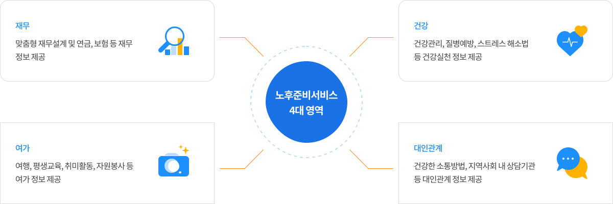

뒤로가기
서비스 소개
노후준비서비스의 개념
노후준비서비스는 국민의 체계적 노후준비와 건강한 노후생활을 위해 노후생활 4대 영역인 재무, 건강, 여가, 대인관계에 대해 종합적인 정보와 서비스를 제공합니다.
서비스 추진 배경
우리나라는 기대수명의 연장과 낮은 출산율로 인해 빠른 속도로 고령화가 진행되어 65세 이상 고령인구 비율이 1990년 5.1%에 불과하였으나 2060년은 40.1%로 세계 최고 수준에 이를 전망입니다. 고령사회는 수명연장이라는 측면에서 축복일 수 있지만 준비되지 않은 고령사회는 큰 고통이 될 수 있다는 우려로 인해 노후준비에 대한 중요성과 관심은 계속 증가하고 있지만, 현실적으로 무엇을, 어떻게 해야 할지 막막한 것이 사실입니다. 따라서, 국민 개개인이 체계적이고 종합적인 노후준비를 지원받아 이러한 어려움을 해결할 수 있도록 노후준비서비스를 추진하게 되었습니다.
서비스 내용
국민연금공단에서는 [노후준비 지원법]에 따라 국민 모두가 체계적으로 노후를 준비할 수 있도록 재무, 건강, 여가, 대인관계 영역에 대한 진단, 상담, 교육, 관계기관 연계, 사후관리 서비스 등을 제공하고 있습니다.로 무엇을, 어떻게 해야 할지 막막한 것이 사실입니다. 따라서, 국민 개개인이 체계적이고 종합적인 노후준비를 지원받아 이러한 어려움을 해결할 수 있도록 노후준비서비스를 추진하게 되었습니다.
[노후준비 지원법] (2015.12.23. 시행)
국민의 행복한 노후생활을 지원하고 고령화에 따른 사회적 비용을 절감하기 위해 마련된 제도적 장치

노후준비서비스 4대 영역
- 재무
- 맞춤형 재무설계 및 연금, 보험 등 재무정보 제공
- 건강
- 건강관리, 질병예방, 스트레스 해소법 등 건강실천 정보 제공
- 여가
- 여행, 평생교육, 취미활동, 자원봉사 등 여가 정보 제공
- 대인관계
- 건강한 소통방법, 지역사회 내 상담기관 등 대인관계 정보 제공